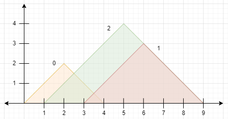
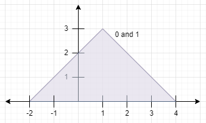

| Category | Difficulty | Likes | Dislikes |
|---|---|---|---|
| Algorithms | Medium | 174 | 79 |
array | stack | sorting | monotonic-stack
google
You are given a 0-indexed 2D integer array peaks where peaks[i] = [xi, yi] states that mountain i has a peak at coordinates (xi, yi). A mountain can be described as a right-angled isosceles triangle, with its base along the x-axis and a right angle at its peak. More formally, the gradients of ascending and descending the mountain are 1 and -1 respectively.
A mountain is considered visible if its peak does not lie within another mountain (including the border of other mountains).
Return the number of visible mountains.
Example 1:

Input: peaks = [[2,2],[6,3],[5,4]]
Output: 2
Explanation: The diagram above shows the mountains.
- Mountain 0 is visible since its peak does not lie within another mountain or its sides.
- Mountain 1 is not visible since its peak lies within the side of mountain 2.
- Mountain 2 is visible since its peak does not lie within another mountain or its sides.
There are 2 mountains that are visible.Example 2:

Input: peaks = [[1,3],[1,3]]
Output: 0
Explanation: The diagram above shows the mountains (they completely overlap).
Both mountains are not visible since their peaks lie within each other.
Constraints:
1 <= peaks.length <= 105peaks[i].length == 21 <= xi, yi <= 105